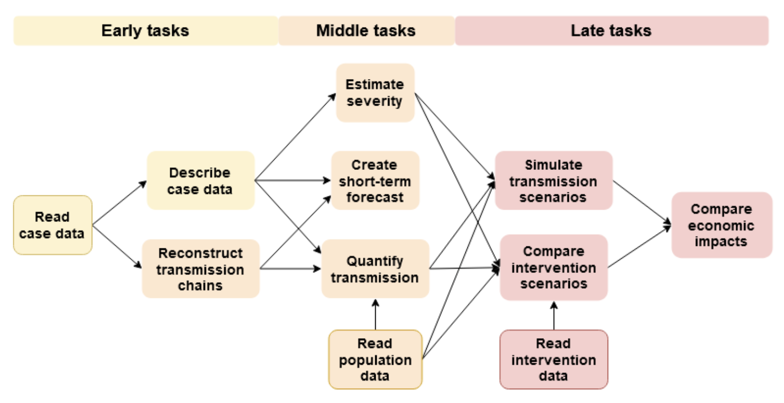
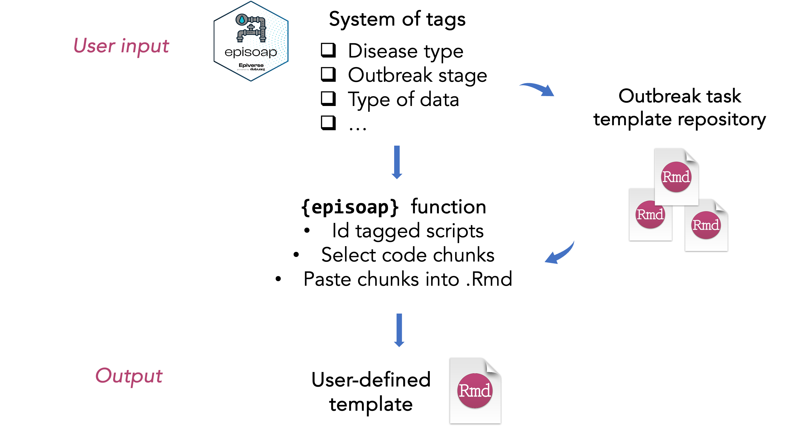

User-defined pipelines: tagging the landscape of outbreak analytic tasks
Carmen Tamayo ![]()
Karim Mané
Christian Althaus
Finlay Campbell
Introduction
Outbreak response interventions rely on the comprehensive analysis and integration of diverse sources of data, which makes outbreak analytics an essential component of an epidemic preparedness plan (1). However, during most responses, outbreak analytic pipelines are either absent or fragmented, as they are usually developed reactively mid-outbreak (2). This results in inefficiencies in the analytical process, which ultimately hinder the timeliness and effectiveness of the response (3). Further, the increasing variety of data sources and complexity of the analytical methods used in epidemic response activities require innovative solutions and tools that enable the integration and interpretation of data by the users. Despite the good progress made by existing initiatives (4,5), there is still a pressing need for robust and reliable pipelines for epidemiologists and analyst to gain situational awareness and inform decision-making during an outbreak. These pipelines need to be developed by considering the needs of the users in the field, who are often required to make decisions in high-pressure situations, with important limitations, such as the time constraints for learning how to use new or complex tools, or the lack of literacy in programming languages, like R or Python.
The pipeline approach
This approach divides outbreak analytic tasks into smaller, more manageable modules, depending on the stage of the outbreak, i.e., early, middle, and late outbreak tasks (Figure 1). This modular approach also provides the flexibility to incorporate different methods and tools that are developed independently, which enhances the robustness of the analysis. Pipelines consist in a combination of tools and code to enable their interoperability, by standardising outputs format so that they can be used as inputs by the subsequent tool in the workflow. In this manner, users can provide their data as an input of the pipeline, and the desired result or estimate is generated as an output, streamlining the analytical process. The pipeline approach has clear advantages when compared to the typical workflows used in outbreak analytics, where scripts are manually developed from scratch for each investigation. This is a tedious, error-prone process, that the pipeline approach aims to optimise.

The episoap R package (6) has been developed to facilitate the implementation of the pipeline approach into users’ analytical workflows. This package provides a repository of curated outbreak analytic pipelines, in the form of R markdown (.Rmd) report templates. Users can use these templates to input their data and, when knitting these files, outbreak reports are generated.
episoap system of report templates has several advantages. Firstly, they use literate programming (7), in which descriptive text and code are combined in the same document. This means that figures and statistics are generated dynamically as the code is updated, with no need to swap from statistical software, e.g., Excel or RStudio, and a word processor, e.g., Microsoft Word, as outputs of the analysis are automatically updated. Further, these templates’ output consists in a report that describes the analysis and results, that can be shared directly with decision makers, other analysts, or the wider public. Lastly, since the pipelines included in these templates have been pre-developed, the use of episoap requires minimum R literacy. These advantages address the main issues of users in the field, by reducing the necessary time, effort, and technical requirements needed to conduct outbreak analytic tasks.
Building on episoap: user-defined outbreak analytic pipelines
The main limitation of the repository of report templates provided by episoap is that the content of pipelines included in the package are fixed, and users are not able to make changes, such as removing or adding analytical steps. This lack of flexibility may be too restrictive for users, since ideally, they would have access to tools that are adaptable to their specific circumstances.
To address this limitation, we propose an approach that enables users to define their own pipelines, by selecting and combining the desired outbreak analytic tasks. This approach relies on a system of tags, which specify relevant epidemiological and analytical characteristics of the outbreak, and are used to categorise each code chunk included in the report templates. These tags are then used as arguments of an R function in episoap, which selects the corresponding chunks to create custom .Rmd report templates, that are tailored to the outbreak’s circumstances (Figure 2). This way, components of a pipeline can be taken apart and used as building blocks for new, user-defined pipelines.

Tagging the outbreak analytic landscape
The system proposed in this article consists in the identification of those dimensions that a user will likely consider when deciding which analysis to conduct in an outbreak investigation, and that will therefore shape the resulting analytical pipeline. These dimensions are then assigned tags that specify the characteristics of the outbreak and the analytical step.
Table 1 contains a summary of the list of dimensions and tags identified so far by the authors of this article.
here I’m planning to include a use case of a specific outbreak scenario, with the corresponding tags and code chunks, and how these are used as arguments, when the prototype of the function is ready for use
| Dimension | Tags |
|---|---|
| Epidemic phase | Single cases/ clusters Local outbreak Regional epidemic Pandemic Endemic Post-intervention |
| Type of transmission | Direct contact Food/water-borne Vector-borne |
| Type of data | Individual data Aggregated counts Time series Seroprevalence Contact data Social mixing |
| Study questions | Infection characteristics Transmissibility Severity Immunity Impact of interventions Vaccination Surveillance bias |
| Temporal scope | Retrospective analysis Situational analysis Forecasting models Projective models |
What next?
The work described in this article was carried out during a Hackathon, hosted by the WHO Pandemic Hub and Epiverse-TRACE (see GitHub repository for more details). We are currently working to develop a prototype of the described episoap function, and to expand the list of tags included in Table 1.
However, we believe that this project requires input from the wider community, particularly in two key aspects. The first one is to identify outbreak tasks and map them to tags in a way that is relevant for users, so that the pipeline modules included in {episoap} are comprehensive, and the package can be used in an intuitive manner. Secondly, to increase the variety of methods and tools used in the report templates. While the pipelines in {episoap} already provide alternatives to conduct certain analysis steps, e.g., using different R packages to estimate Rt in the transmissibility pipeline, users would benefit from a wider variety of options, particularly to include methods that are specific to certain diseases or contexts. For this purpose, we propose the creation of a repository of tagged scripts, sourced by members of the outbreak analytics community, whose code could then be included in episoap (or extracted directly from such repository if preferred). This repository should be easily accessible by all members of the community, and therefore hosted by an international institution such as the WHO, similarly to their repository of epidemiological parameters.
References
- Polonsky JA, Baidjoe A, Kamvar ZN, Cori A, Durski K, Edmunds WJ, et al. Outbreak analytics: a developing data science for informing the response to emerging pathogens. Philos Trans R Soc B Biol Sci. 2019 May 20;374(1776):20180276.
- Morgan O, Pebody R. The WHO Hub for Pandemic and Epidemic Intelligence; supporting better preparedness for future health emergencies. Eurosurveillance. 2022 May 19;27(20):2200385.
- Kucharski AJ, Hodcroft EB, Kraemer MUG. Sharing, synthesis and sustainability of data analysis for epidemic preparedness in Europe. Lancet Reg Health - Eur. 2021 Oct 1;9:100215.
- Epiverse-TRACE
- AppliedEpi
- Episoap R package
- D. E. Knuth, Literate Programming, The Computer Journal, Volume 27, Issue 2, 1984, Pages 97–111, https://doi.org/10.1093/comjnl/27.2.97